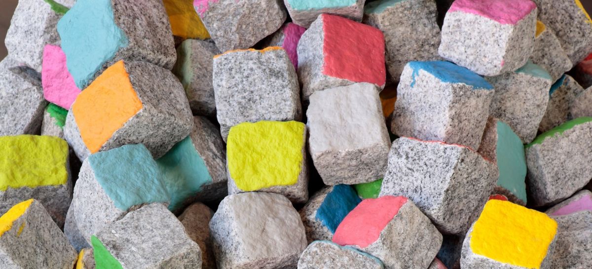
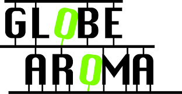

In 2019 startte ik als freelancer strategische communicatie bij de publiekswerving van Expo Congoville in het Middelheimuseum in Antwerpen. Een heel boeiende ervaring.
Van 2009-2015 werkte ik als artistiek en cultureel projectmanager bij Globe Aroma vzw. Een uniek open Kunstenhuis voor kunstenaars met verschillende achtergronden, disciplines en cultuurliefhebbers waardoor ik verschillende culturele centra en festiviteiten kon ontdekken.
Daarnaast heb ik cultuurlijn voor de gezinnen uit kasteeltje in Brussel opgericht. Ook begeleidde ik deze kansarmgezinnen naar activiteiten waarvan ze meestal uitgesloten zijn of waar ze zich niet welkom voelen. De Cultuurlijn leidt asielzoekers toe naar het artistieke aanbod in Brussel.